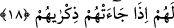
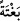
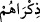
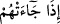

18. (İnanmayanlar) ille (helâk edilecekleri) sâ‘atin ansızın kendilerine gelmesini
mi bekliyorlar? İşte onun belirtileri geldi. O uyarıldıkları sâ‘at kendilerine
geldikten sonra artık öğüt almaları nereden mümkün olsun?
Münâfıklar ve kâfirler “ille (helâk edilecekleri) sâ‘atin” kıyâmetin öğüt almaları için
“ansızın kendilerine gelmesini mi bekliyorlar?” Oysa onlar, geçmiş ümmetlerin
ahvâlinin zikrinden, kıyâmetin geleceğine dâir haberlerden ve kıyâmette vukû bulacak o
muazzam işlerden öğüt almıyorlar. “İşte onun belirtileri geldi.” Artık öğüt almaları
için bizâtihî kıyâmetin gelmesinden başka bekleyecek bir şey kalmadı. Kıyâmetin alâmet
ve belirtileri geldiği halde başlarını kaldırıp şöyle bir bakmadılar ve bunları kıyametin
geleceğinin sinyalleri olarak görmediler.
 (bağte), ansızın demektir. Yâni kıyâmet onlara baskın yaparcasına ansızın
gelecektir. Kıyâmetin belirtilerinin gelmesi, kıyâmetin mutlak olarak geleceğinin değil
de ansızın geleceğinin illetini beyândır. Eşrât, şarat kelimesinin çoğulu olup
“alâmetler” demektir. Bundan murad ise Peygamberimiz (s.a.)’in gönderilmesidir.
Peygamberimizin ümmeti ümmetlerin sonuncusudur. Öyle ise Peygamberimiz (s.a.)’in
gönderilmiş olması, zamanın sona erip kıyâmetin yaklaştığının alâmetidir.
“O uyarıldıkları sâat kendilerine geldikten sonra artık öğüt almaları nereden
mümkün olsun?” Bu durumda kuşkusuz kıyâmetin gelişi ansızın olacaktır. Kıyâmet
geldiğinde öğüt almak artık mümkün olmadığından, onların öğüt almayı kıyâmetin
gelişine ertelemeleri, yanlış bir düşünce ve hatâlı bir davranıştır. Bu ifâde tıpkı Allah
Teâlâ’nın “İşte o gün insan anlar ama artık bu anlamanın kendisine ne yararı
var?” (Fecr 89/23) buyruğu gibidir. Yâni onlara kıyâmet geldiğinde nasıl öğüt alsınlar
ki?
Âyetin bu kısmında (ennâ) kelimesi mukaddem haber,  (zikrâhum) ise muahhar
mübtedadır.  (izâ câethum) ifâdesi ise kıyametin çok çabuk geleceğine bir işâret
olarak mübteda ile haber arasına girmiş itirâzî bir cümledir. Burada kıyâmetin gelişini
“ansızın” kaydı olmaksızın mutlak olarak zikretmek şunun içindir: Çünkü kıyâmet
geldiğinde öğüt almanın imkânsızlığı, kıyâmetin mutlak gelişi anında olup ansızın
kaydıyla sınırlı değildir.
Mekhul’un Huzeyfe’den rivâyet ettiğine göre Huzeyfe (r.a.) Peygamberimiz (s.a.)’e
kıyâmetin ne zaman kopacağını sordu. Peygamberimiz (s.a.): “Sorulan sorandan daha
iyi bilmiyor. Fakat onun gelişinin bir takım alâmet ve belirtileri vardır” buyurdu.
Sonra bunları şöyle sıraladı: “Çarşı pazarların girift bir halde olup kazanç ve
bereketin kalkması, yağmurların zamansız yağması, fitnenin yayılması, nikâhsız